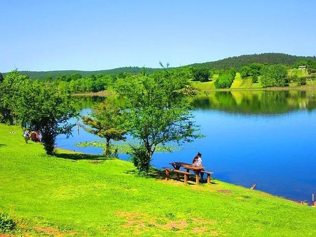

Türkiye'nin tek parça halindeki en büyük longoz ormanı.

Poyrazlar Gölü
Piknik ve doğa yürüyüşleri için vazgeçilmez bir mekan.
Genel Bilgiler
Sakarya, Marmara Bölgesi'nde yer alan, doğası ve sanayisiyle hızla gelişen bir şehrimizdir. Yeşilin ve mavinin buluştuğu eşsiz doğa harikalarına ev sahipliği yapar.